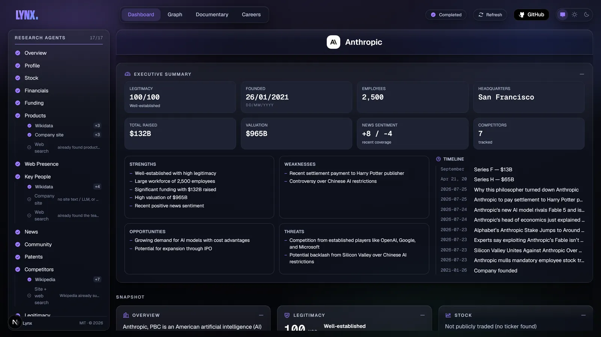
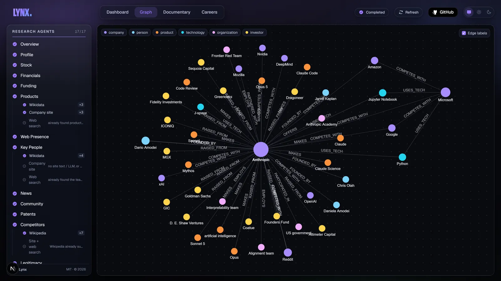
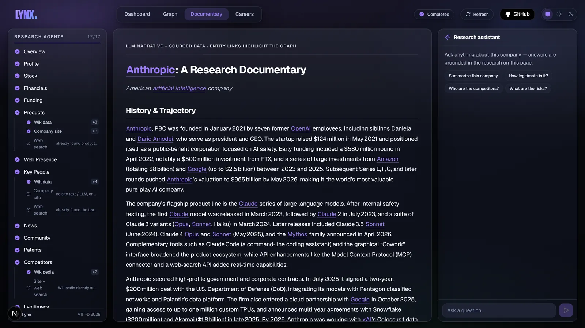

Source ladders
Agents walk a ranked list of sources, most authoritative first, and stop at the first rung that answers. Every rung reports what happened.
- Wikidata found 4 people
- Company site not needed
- Web search not needed
Type a company. Fifteen agents research it across public sources, live.

Every run fills a dashboard, a knowledge graph and a written documentary from the same cited facts.


A card per category, filling in live as each agent lands. An executive summary sits on top: scorecard, SWOT and a merged timeline. A force-directed map of people, products, investors and competitors. Click any node for its facts, citations and connections. A long-form write-up with wiki-linked entities, plus a chat assistant that answers only from that run's data.
Every fact comes back with the source it came from, and every gap explains itself.
Agents walk a ranked list of sources, most authoritative first, and stop at the first rung that answers. Every rung reports what happened.
Each runs in isolation with its own timeout. A source going down costs you one card, never the run.
Every data source works out of the box. Add a free LLM key, like Groq, for richer analysis and a fully written documentary.
Real runs against live sources, recorded by the benchmark harness in the repo. Every run finished all 17 passes.
Data sources
Metered services sit on the last rung of every ladder, so most runs never touch them.
Lynx runs on your own machine. Your keys stay in your own .env and every run is saved to a local database.
CONTACT_EMAIL in .env (SEC asks for one)localhost:3000 and type a companygit clone https://github.com/ronak-create/Lynx.git
cd Lynx
cp .env.example .env
docker compose up --buildgit clone https://github.com/ronak-create/Lynx.git
cd Lynx
cp .env.example .env
cd apps/api && uv sync && cd ../..
pnpm install
pnpm dev